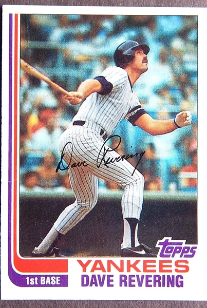

Dave Revering
Career Highlights & Facts
(Facts are AI-generated and may require verification)
- Was a key piece in a mid-season transaction that brought a former Most Valuable Player and legendary slugger to the club's city.
- Spent the majority of his time on the diamond anchoring the corner of the infield, serving as a primary defensive option at first base.
- Experienced a whirlwind career trajectory that saw him suit up for three different organizations during a single calendar year.
Would you like to find out more about Dave Revering?
Career Totals
| WAR | AB | H | HR | BA | R | RBI | SB | OBP | SLG | OPS | OPS+ |
|---|---|---|---|---|---|---|---|---|---|---|---|
| 5.1 | 1832 | 486 | 62 | .265 | 205 | 234 | 2 | .318 | .430 | .748 | 110 |
Statistics via Baseball-Reference.com
The Original Clue